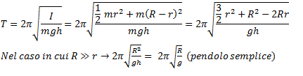

CaptainJohnCabot16 ott 2016, 9:40
Un cilindro pieno uniforme di raggio \(r\) rotola senza scivolare lungo la superficie di un cilindro vuoto di raggio \(R\) , realizzando piccole oscillazioni. Determinarne il periodo.
Ciccio9816 ott 2016, 12:30
Ho trattato il cilindro pieno come un pendolo reale
-
Allegati
-

- Soluzione cilindro nel cilindro.png (4.02 KiB) Visto 4737 volte
Ciccio9816 ott 2016, 12:39
Con h=R-r... però pensandoci bene è come se avessi detto che il cilindro scivola e non che ruota :?
CaptainJohnCabot16 ott 2016, 18:55
Ciccio98 ha scritto:Con h=R-r... però pensandoci bene è come se avessi detto che il cilindro scivola e non che ruota :?
Infatti il risultato è sbagliato
CaptainJohnCabot16 ott 2016, 22:13
Giusto vai col 99 :D